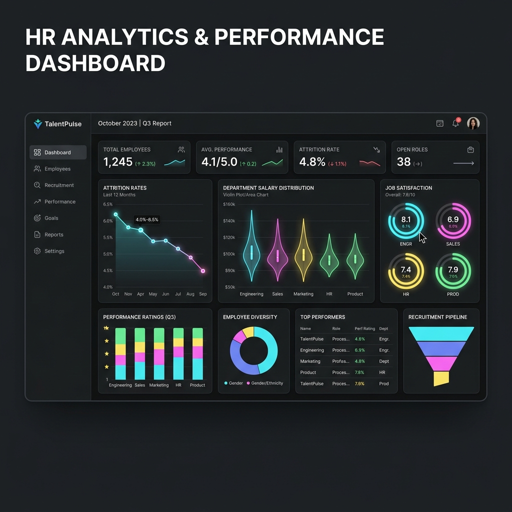

Employee Performance & HR Analytics Dashboard
Interactive Power BI dashboard investigating attrition rates (~17%), department salary disparities, and indicators of performance using a 1,470-row dataset. Includes end-to-end load automation via python pipelines.